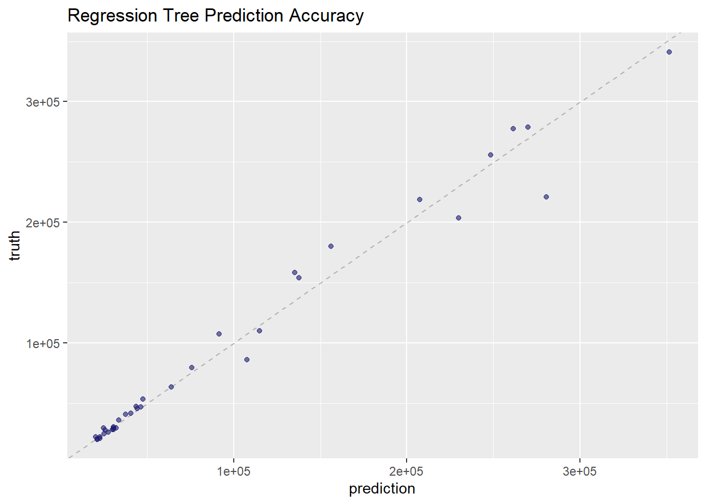
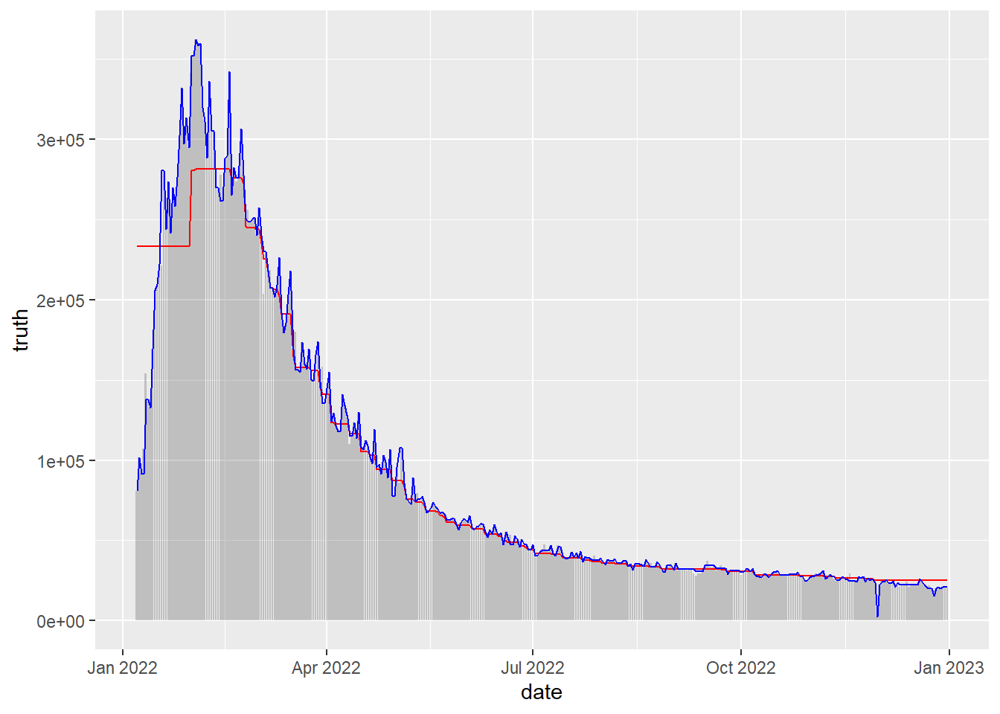

data<-read_excel("Problem_C_Data_Wordle.xlsx", skip=1) %>%
clean_names()MCM Project
Importing Libraries
Importing Data
Exploratory Analysis
#Visualizing Relationships
#Comparing Date to number of people that participate
data %>%
ggplot(aes(x=date, y=number_of_reported_results))+
geom_point()
#Are people getting better
data %>%
ggplot(aes(x=date, y=data$x7_or_more_tries_x))+
geom_point()Warning: Use of `data$x7_or_more_tries_x` is discouraged.
i Use `x7_or_more_tries_x` instead.
#Are more people trying hard mode
data %>%
ggplot(aes(x=date, y=data$number_in_hard_mode))+
geom_point()Warning: Use of `data$number_in_hard_mode` is discouraged.
i Use `number_in_hard_mode` instead.
#First attempt Guesses over time
data %>%
ggplot(aes(x=date, y=data$x1_try))+
geom_point()Warning: Use of `data$x1_try` is discouraged.
i Use `x1_try` instead.
Problem 1: Predicting number of players
This needs to be a regression model. This data is in no way linear so the first attempt is to create a nonlinear regression method.
#Creating Data splits
set.seed(1234)
split<-initial_split(data, prop = .9)
training_data<-training(split)
test_data<-testing(split)
#The Future Date we want to predict the participants for
future_date<-data_frame(date = as.Date(x = "2023/3/1"),
contest_number = 620)Warning: `data_frame()` was deprecated in tibble 1.1.0.
i Please use `tibble()` instead.Basic Decision Tree
## Basic Decision Tree ##
untuned_reg_tree<- decision_tree(mode = "regression",
engine = "rpart",
tree_depth = tune(),
min_n = tune(),
cost_complexity = tune())
reg_tree_grid<-grid_regular(tree_depth(),
cost_complexity(),
min_n(),
levels = 5)
folds<-vfold_cv(training_data)
reg_tree_wf<-workflow() %>%
add_model(untuned_reg_tree) %>%
add_formula(number_of_reported_results ~ date + contest_number)
reg_tree_results<-reg_tree_wf %>%
tune_grid(resamples = folds, grid = reg_tree_grid)
best_reg_tree_params<-reg_tree_results %>%
select_best()Warning: No value of `metric` was given; metric 'rmse' will be used.#Tune Tree Model
tuned_reg_tree<-finalize_model(untuned_reg_tree, best_reg_tree_params)
reg_tree_wf<- reg_tree_wf %>%
update_model(tuned_reg_tree) %>%
fit(training_data)
#Depicting Accuracy
data_frame(prediction = predict(reg_tree_wf, test_data)$.pred,
truth = test_data$number_of_reported_results) %>%
ggplot(aes(prediction, truth))+
geom_abline(slope = 1, lty = 2, color = "gray50", alpha = 0.5) +
scale_x_continuous(breaks = seq(100000, 300000, by = 100000))+
scale_y_continuous(breaks = seq(100000, 300000, by = 100000))+
geom_point(alpha = 0.6, color = "midnightblue") +
ggtitle("Regression Tree Prediction Accuracy")
#Prediction for March 1, 2023 participants
predict(reg_tree_wf, new_data = future_date)# A tibble: 1 x 1
.pred
<dbl>
1 21204Boosted Tree
## Boosted Tree xGBoost ##
untuned_reg_xgb<-boost_tree(mode = "regression",
engine = "xgboost",
mtry = tune(),
trees = 1000,
min_n = tune(),
tree_depth = tune(),
learn_rate = tune(),
sample_size = tune(),
loss_reduction = tune())
#Tuning Boosted Tree
reg_xgb_grid <- grid_latin_hypercube(tree_depth(),
min_n(),
loss_reduction(),
sample_size = sample_prop(),
finalize(mtry(), training_data),
learn_rate(),
size = 30)
reg_xgb_wf <- workflow() %>%
add_formula(number_of_reported_results ~ date + contest_number) %>%
add_model(untuned_reg_xgb)
folds<-vfold_cv(training_data)
reg_xgb_res <- tune_grid(reg_xgb_wf,
resamples = folds,
grid = reg_xgb_grid,
control = control_grid(save_pred = TRUE))
best_reg_xgb_params<- select_best(reg_xgb_res)Warning: No value of `metric` was given; metric 'rmse' will be used.#Updating Workflow with Tuned Model and Fitting it to Training Data
tuned_reg_xgb<-finalize_model(untuned_reg_xgb, best_reg_xgb_params)
reg_xgb_wf<- reg_xgb_wf %>%
update_model(tuned_reg_xgb) %>%
fit(training_data)
#Measuring Accuracy
data_frame(prediction = predict(reg_xgb_wf, test_data)$.pred,
truth = test_data$number_of_reported_results) %>%
ggplot(aes(prediction, truth))+
geom_abline(slope = 1, lty = 2, color = "gray50", alpha = 0.5) +
geom_point(alpha = 0.6, color = "midnightblue") +
scale_x_continuous(breaks = seq(100000, 300000, by = 100000))+
scale_y_continuous(breaks = seq(100000, 300000, by = 100000))+
ggtitle("Boosted Tree Prediction Accuracy")
#Predicting Number of Participants in March
predict(reg_xgb_wf, future_date, interval = 'confidence')# A tibble: 1 x 1
.pred
<dbl>
1 25262.gbmfunction (formula = formula(data), distribution = "bernoulli",
data = list(), weights, var.monotone = NULL, n.trees = 100,
interaction.depth = 1, n.minobsinnode = 10, shrinkage = 0.1,
bag.fraction = 0.5, train.fraction = 1, cv.folds = 0, keep.data = TRUE,
verbose = FALSE, class.stratify.cv = NULL, n.cores = NULL)
{
mcall <- match.call()
lVerbose <- if (!is.logical(verbose)) {
FALSE
}
else {
verbose
}
mf <- match.call(expand.dots = FALSE)
m <- match(c("formula", "data", "weights", "offset"), names(mf),
0)
mf <- mf[c(1, m)]
mf$drop.unused.levels <- TRUE
mf$na.action <- na.pass
mf[[1]] <- as.name("model.frame")
m <- mf
mf <- eval(mf, parent.frame())
Terms <- attr(mf, "terms")
w <- model.weights(mf)
offset <- model.offset(mf)
y <- model.response(mf)
if (missing(distribution)) {
distribution <- guessDist(y)
}
if (is.character(distribution)) {
distribution <- list(name = distribution)
}
if (!is.element(distribution$name, getAvailableDistributions())) {
stop("Distribution ", distribution$name, " is not supported.")
}
if (distribution$name == "multinomial") {
warning("Setting `distribution = \"multinomial\"` is ill-advised as it is ",
"currently broken. It exists only for backwards compatibility. ",
"Use at your own risk.", call. = FALSE)
}
var.names <- attributes(Terms)$term.labels
x <- model.frame(terms(reformulate(var.names)), data = data,
na.action = na.pass)
response.name <- as.character(formula[[2L]])
class.stratify.cv <- getStratify(class.stratify.cv, d = distribution)
group <- NULL
num.groups <- 0
if (distribution$name != "pairwise") {
nTrain <- floor(train.fraction * nrow(x))
}
else {
distribution.group <- distribution[["group"]]
if (is.null(distribution.group)) {
stop(paste("For pairwise regression, `distribution` must be a list of",
"the form `list(name = \"pairwise\", group = c(\"date\",",
"\"session\", \"category\", \"keywords\"))`."))
}
i <- match(distribution.group, colnames(data))
if (any(is.na(i))) {
stop("Group column does not occur in data: ", distribution.group[is.na(i)],
".")
}
group <- factor(do.call(paste, c(data[, distribution.group,
drop = FALSE], sep = ":")))
if ((!missing(weights)) && (!is.null(weights))) {
w.min <- tapply(w, INDEX = group, FUN = min)
w.max <- tapply(w, INDEX = group, FUN = max)
if (any(w.min != w.max)) {
stop("For `distribution = \"pairwise\"`, all instances for the same ",
"group must have the same weight.")
}
w <- w * length(w.min)/sum(w.min)
}
perm.levels <- levels(group)[sample(1:nlevels(group))]
group <- factor(group, levels = perm.levels)
ord.group <- order(group, -y)
group <- group[ord.group]
y <- y[ord.group]
x <- x[ord.group, , drop = FALSE]
w <- w[ord.group]
num.groups.train <- max(1, round(train.fraction * nlevels(group)))
nTrain <- max(which(group == levels(group)[num.groups.train]))
Misc <- group
}
cv.error <- NULL
if (cv.folds == 1) {
cv.folds <- 0
}
if (cv.folds > 1) {
cv.results <- gbmCrossVal(cv.folds = cv.folds, nTrain = nTrain,
n.cores = n.cores, class.stratify.cv = class.stratify.cv,
data = data, x = x, y = y, offset = offset, distribution = distribution,
w = w, var.monotone = var.monotone, n.trees = n.trees,
interaction.depth = interaction.depth, n.minobsinnode = n.minobsinnode,
shrinkage = shrinkage, bag.fraction = bag.fraction,
var.names = var.names, response.name = response.name,
group = group)
cv.error <- cv.results$error
p <- cv.results$predictions
}
gbm.obj <- gbm.fit(x = x, y = y, offset = offset, distribution = distribution,
w = w, var.monotone = var.monotone, n.trees = n.trees,
interaction.depth = interaction.depth, n.minobsinnode = n.minobsinnode,
shrinkage = shrinkage, bag.fraction = bag.fraction, nTrain = nTrain,
keep.data = keep.data, verbose = lVerbose, var.names = var.names,
response.name = response.name, group = group)
gbm.obj$train.fraction <- train.fraction
gbm.obj$Terms <- Terms
gbm.obj$cv.error <- cv.error
gbm.obj$cv.folds <- cv.folds
gbm.obj$call <- mcall
gbm.obj$m <- m
if (cv.folds > 1) {
gbm.obj$cv.fitted <- p
}
if (distribution$name == "pairwise") {
gbm.obj$ord.group <- ord.group
gbm.obj$fit <- gbm.obj$fit[order(ord.group)]
}
gbm.obj
}
<bytecode: 0x0000000034ecb450>
<environment: namespace:gbm>Support Vector Machine Regression
Comparing Regressions
#Trying to visualize our model's accuracy
data.frame(xgb_pred = predict(reg_xgb_wf, data)$.pred,
tree_pred= predict(reg_tree_wf, data)$.pred,
truth = data$number_of_reported_results,
date = data$date) %>%
ggplot(aes(x=date))+
geom_col(aes(y=truth), alpha = 0.3)+
geom_line(aes(y=xgb_pred), color='red')+
geom_line(aes(y=tree_pred), color='blue')